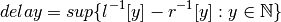
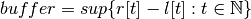
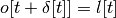
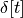
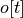
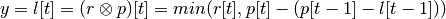

Network Profile¶
Network Profile implements the ProfileEntry and Profile classes. These classes provide all the members and functions neccessary to model, compose, and analyze network profiles for applications and systems.
-
class
networkProfile.Profile(kind=None, period=0, priority=0, source=0, dest=0, num_periods=1)¶ Profile contains the information about a single network profie. A network profile has a kind (e.g. ‘provided’), a period (in seconds), and a lists of relevant data vs time series (e.g. bandwidth, latency, data, etc.).
Parameters: - kind (string) – what kind of profile is it?
- period (double) – what is the periodicity (in seconds) of the profile
- priority (int) – what is the priority of the flow in the system
- source (int) – what is the node id from which the data on this profile will be sent
- dest (int) – what is the node id to which the data on this profile will be sent
-
field_delimeter= ','¶ What separates fields in a profile?
-
header_delimeter= '#'¶
-
comment_delimeter= '%'¶
-
line_delimeter= '\n'¶
-
special_delimeters= ['#', '%']¶
-
kind= None¶ The kind of this profile, e.g. ‘required’
-
period= None¶ The length of one period of this profile
-
priority= None¶ The priority of the profile; relevant for ‘required’ profiles
-
src_id= None¶ The node ID which is the source of this profile
-
dst_id= None¶ The node ID which is the destination of this profile
-
entries= None¶ Dictionary of ‘type name’ -> ‘list of [x,y] points’ k,v pairs
-
ParseHeader(header)¶ Parses information from the profile’s header if it exists:
- period
- priority
- source node ID
- destination node ID
- profile kind
A profile header is at the top of the file and has the following syntax:
# <property> = <value>
-
ParseFromFile(prof_fName)¶ Builds the entries from a properly formatted CSV file. Internally calls
Profile.ParseFromString().
-
ParseFromString(prof_str)¶ Builds the entries from a string (line list of csv’s formatted as per
ParseEntriesFromLine()).
-
ParseEntriesFromLine(line_str)¶ Builds the [time, value] list for each type of value into entries:
- slope
- max slope
- latency
These values are formatted in the csv as:
<time>, <slope>, <max slope>, <latency>
-
EntriesRemoveDegenerates()¶ Remove duplicate entries by time stamp.
-
AggregateSlopes()¶ Remove sequential entries which have the same slope.
-
EntriesStartFill()¶ Make sure all entries have a start time of 0.
-
Repeat(num_periods)¶ Copy the current profile entries over some number of its periods.
-
Integrate(time)¶ Integrates the slope entries to produce data entries up to time
-
Derive()¶ Derives the slope entries from the data entries
-
IsKind(kind)¶ Returns True if the profile is of type kind, False otherwise.
-
Kind(kind)¶ Set the kind of the profile.
-
Shrink(t)¶ Shrink the profile to be <= t.
-
AddProfile(profile)¶ Compose this profile with an input profile by adding their slopes together.
-
SubtractProfile(profile)¶ Compose this profile with an input profile by subtracting the input profile’s slopes.
-
MakeGraphPointsSlope()¶ Return matplotlib plottable x and y series for the slope of the profile.
-
MakeGraphPointsData()¶ Return matplotlib plottable x and y series for the data of the profile.
-
GetValueAtTime(key, t, interpolate=True)¶ Return the value at time t from series key, optionally interpolating between.
-
ToString()¶
-
ValueSeriesToString(key)¶ Return a stringified version of the x & y series specified by key.
-
CalcDelay(output)¶ Compute the maximum horizontal distance between this profile and the input profile. Return it as a form:
[ <time>, <data>, <length of delay> ]
Parameters: output (in) – a Profiledescribing the output profileThe delay is calculated as (see Formalism for Better Precision Network Analysis):

-
CalcBuffer(output)¶ Compute the maximum vertical distance between this profile and the input profile. Return it as a form:
[ <time>, <data>, <size of the buffer> ]
Parameters: output (in) – a Profiledescribing the output profileThe buffer is calulated as (see Formalism for Better Precision Network Analysis):

-
Delay(delayProf)¶ Apply a delay profile to this profile; this may be used for determining the profile received by a node for which this profile is the output profile on the sender side. The delay profile describes the delay as a function of time for the link.
This function implements the operation:

Where
-  is the delay profile
![l[t]](../../_images/math/c52328274518603a2cc478a4db8925ffa035faed.png) is the profile transmitted into the link
is the profile transmitted into the link-  is the output profile received at the other end of the link
Parameters: delayProf (in) – Profiledescribing the delay
-
Convolve(provided)¶ Use min-plus calculus to convolve this required profile with an input provided profile.
Return type: Profile,where
is defined as (see Formalism for Better Precision Network Analysis):